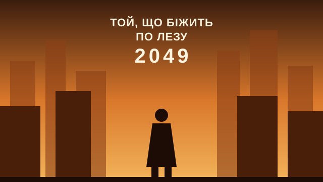

Серце звіра
Колишній солдат і його пес-вівчарка лишаються самі серед засніжених гір Аляски після аварії літака й мусять протриматися до приходу рятувальників.
Код сеансу: CIN-2026-A07
Колишній солдат і його пес-вівчарка лишаються самі серед засніжених гір Аляски після аварії літака й мусять протриматися до приходу рятувальників.
Код сеансу: CIN-2026-A07

Офіцер поліції К натрапляє на давно поховану таємницю, яка може зруйнувати крихкий порядок суспільства, і вирушає на пошуки зниклого Ріка Декарда.
Код сеансу: CIN-2026-B12
У випаленій пустелі Макс і Імператор Фуріоса тікають на бойовій вантажівці від тирана Безсмертного Джо, рятуючи його полонених дружин.
Код сеансу: CIN-2026-C03
Юний Пол Атрід разом із родиною прибуває на пустельну планету Арракіс — єдине джерело найціннішої речовини у Всесвіті, за яку точиться смертельна боротьба.
Код сеансу: CIN-2026-D21
| Назва фільму | Жанр | Характеристики | Кінокомпанія | ||
|---|---|---|---|---|---|
| Рік | Тривалість | Режисер | |||
| «Інтерстеллар» | Фантастика | 2014 | 2 год 49 хв | Крістофер Нолан | «Warner Bros.» |
| «Початок» | Трилер | 2010 | 2 год 28 хв | ||
| «Темний лицар» | Бойовик | 2008 | 2 год 32 хв | ||
| «Той, що біжить по лезу 2049» | Фантастика | 2017 | 2 год 44 хв | Дені Вільнев | |
| «Дюна» | Фантастика | 2021 | 2 год 35 хв | ||
| «Матриця» | Фантастика | 1999 | 2 год 16 хв | Лана і Ліллі Вачовскі | |
| «Шалений Макс: Дорога гніву» | Бойовик | 2015 | 2 год 0 хв | Джордж Міллер | |
| «Гравітація» | Фантастика | 2013 | 1 год 31 хв | Альфонсо Куарон | |
| «Титанік» | Драма | 1997 | 3 год 14 хв | Джеймс Кемерон | «20th Century Fox» |
| «Аватар» | Фантастика | 2009 | 2 год 42 хв | Джеймс Кемерон | |
| «Серце звіра» | Пригоди | 2026 | 1 год 41 хв | Девід Ейр | «Paramount Pictures» |
Метью Макконахі, Енн Гетевей, Джессіка Честейн.
Леонардо Ді Капріо, Джозеф Гордон-Левітт, Елліот Пейдж.
Леонардо Ді Капріо, Кейт Вінслет, Біллі Зейн.
Сем Вортінгтон, Зої Салдана, Сігурні Вівер.
Крістіан Бейл, Гіт Леджер, Аарон Екгарт.
Раян Гослінг, Гаррісон Форд, Ана де Армас.
Тімоті Шаламе, Ребекка Фергюсон, Оскар Айзек.
Кіану Рівз, Лоуренс Фішберн, Керрі-Енн Мосс.
Том Гарді, Шарліз Терон, Ніколас Голт.
Сандра Буллок, Джордж Клуні, Ед Гарріс.
Бред Пітт, Дж. К. Сіммонс, Анна Ламбе.
Після оплати бронювання переходить у статус «підтверджено», і залишається лише отримати квиток та скористатися ним у день сеансу: